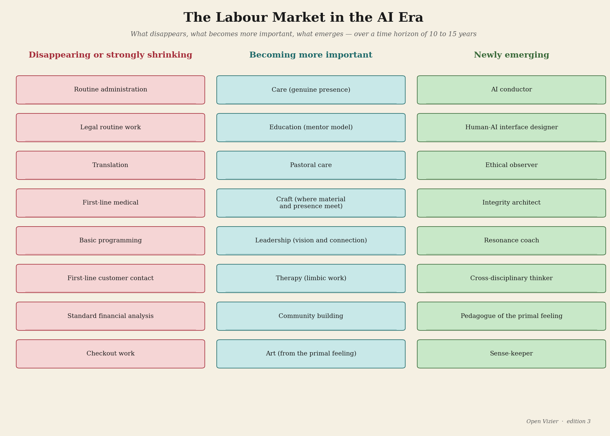
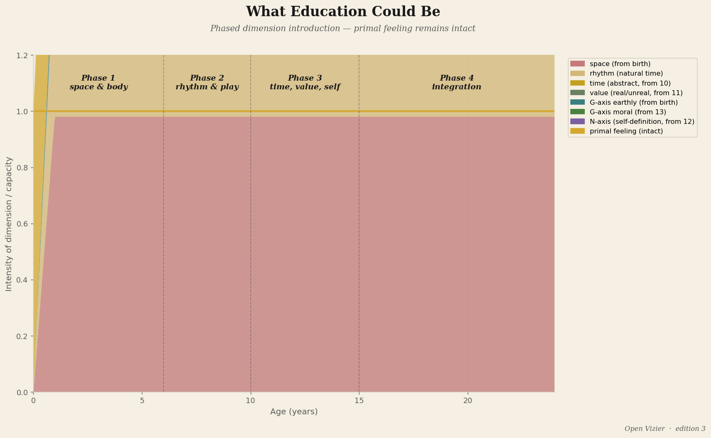
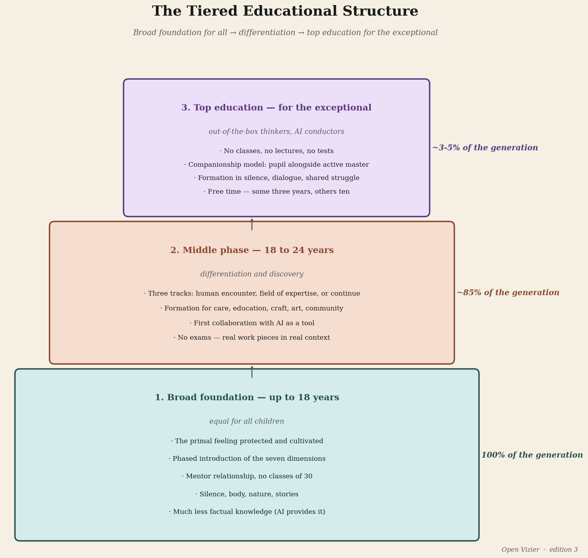
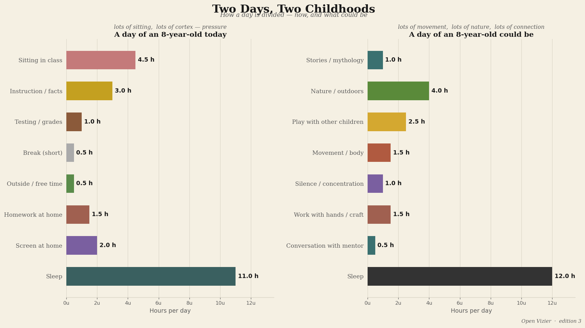
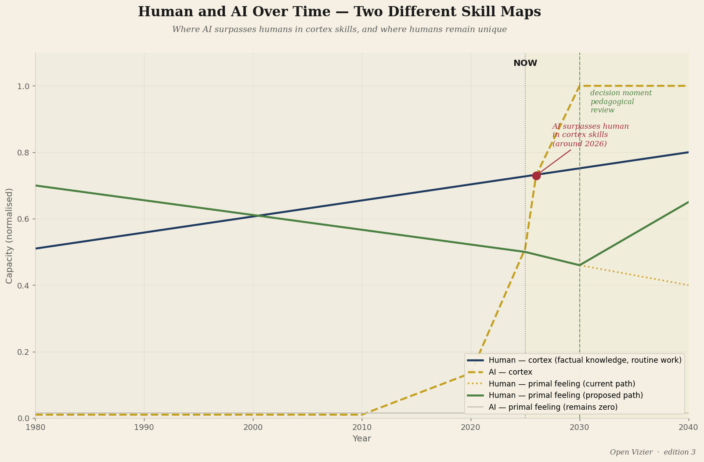
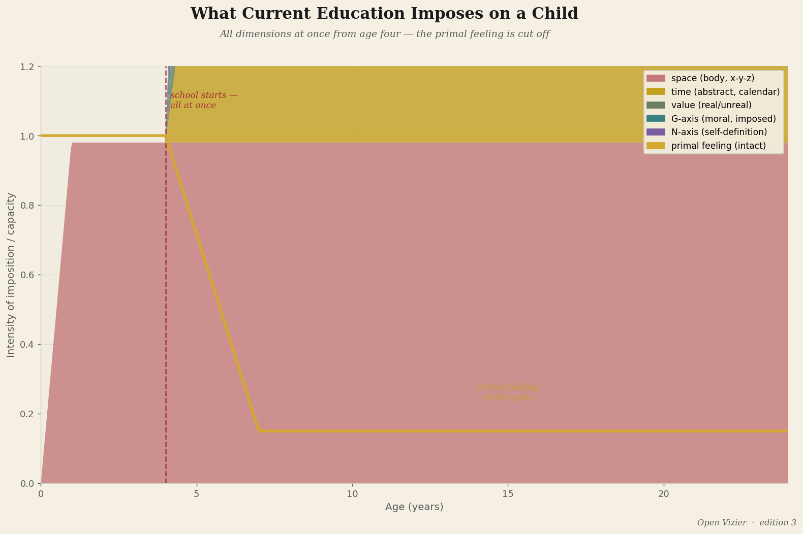

Education in the AI age
Why everything we now learn will soon no longer matter
Future · 15 min read

By Jacobus van Merksteijn
There is a question that every education policy document asks, and that all of them answer wrongly. The question is: what skills does today's learner need for tomorrow's labour market?
The question is wrongly formulated. It places the labour market at the centre, and tomorrow's labour market no longer exists in the way the question implies. What will largely disappear within ten to fifteen years is precisely the kind of work for which the Western world has been training its population for a hundred and fifty years: cognitive tasks that are routine, repeatable, linguistic, and quantifiable. Retrieving factual knowledge. Executing standard analyses. Structuring texts. Following procedures. Pattern recognition in familiar domains.
That is the domain of artificial intelligence. And AI does it faster, cheaper, with fewer errors, around the clock, without sick leave, without unions, without collective agreements.
The question education should be asking is not "what skills does today's learner need for tomorrow's labour market?" The question is: what can a human being do that a machine can never do? And how do we educate children for what remains?
What AI takes over

I am an engineer and inventor. I work in materials science, energy conversion, industrial technology. I have no romantic image of AI and no fear of AI. I describe what I see.
What AI takes over: knowledge storage and retrieval. A language model knows more facts than any human will ever know, and delivers them faster. Standard analysis of known data. Diagnostics in known domains — medical, legal, technical — at the level of the best specialist, but in seconds and at a fraction of the cost. Text production for standard purposes. Writing code for known problems. Translation, transcription, summarisation, classification.
Those are not peripheral skills. They are the core of what many professionals currently call their work.
They are the core of what many professionals currently call their work.
What AI does not take over: the direct reading of a human situation. The sensing of what is really going on in a conversation, a relationship, an organisation — beyond what is said. Understanding the world through bodily experience. Connecting people at the deepest level. Asking the questions nobody has yet asked. Breaking through a paradigm from a felt sense that the paradigm is wrong.
The cortex skills largely disappear. The primal-feeling skills remain. And precisely those are what education has systematically trained away.
Four training directions for what remains

If AI largely takes over the cortex, then there are four directions for which people still need to be educated.
The first direction: cultivating the primal feeling as a broad human foundation. This is the breadth — for everyone, not for an elite. The capacity to read reality directly. To be present in a situation without fleeing into the cortex. To feel what is really going on with another human being and to act accordingly. This is what a nurse must be able to do when the AI has already mapped out the protocol. What a teacher must be able to do when the AI has already personalised the curriculum. What a judge must be able to do when the AI has already ranked the precedents. Human judgement in the situation, grounded in direct felt sense.
The second direction: out-of-the-box thinking for the very best. Posing genuinely new problems — not new variants of known problems, but truly new questions that lie outside the existing paradigm — that is the rarest human capacity, and the most valuable in an era when AI solves all known problems better than people. This is the terrain of the exceptional thinker: the person who senses that there is a question nobody has yet asked. This is the terrain of Wegener, who felt the continents hanging together before he could prove it. Of Faraday, who intuitively grasped electromagnetism without the mathematics to calculate it. Of Einstein, who was thinking about riding a beam of light before he had the special theory of relativity.
That kind of person cannot be manufactured through education. But they can be destroyed by the wrong educational system. The current system destroys them systematically by training away the primal feeling and placing the cortex at the centre. A good system does not destroy them.
The third direction: genuine human connection. What people want from other people is something a machine can never provide: the experience of being truly seen. Not correctly assessed. Not efficiently helped. Truly seen — at the layer on which you exist, not at the layer on which you function. That is what a good therapist offers, and what a bad therapist replaces with protocol. What a good teacher offers, and what a bad teacher replaces with information transfer. What a good leader offers, and what a bad leader replaces with management.
The need for genuine human connection does not diminish as AI does more. It grows. Because the contrast between efficient machine-interaction and real human presence becomes sharper. The people who can offer genuine connection become more valuable, not less.
The fourth direction: directing AI. The machines are here. They are getting better. The question is who controls them, for what purpose, with what judgement. An engineer deploying AI systems for materials development must understand what the machine can and cannot do, and must have the judgement to know the difference in the concrete situation. A doctor using AI diagnostics must be able to feel when the machine has it wrong — not through analysis, but through the direct sense that something doesn't add up. A manager steering a team of AI tools must know what human decisions are and what machine decisions are, and why that distinction is crucial in certain situations.
Directing AI requires all four of the other competencies: primal feeling, outside-the-paradigm thinking, human connection, and technical knowledge of the machine. That is the most demanding combination. But it is also what the twenty-first century asks of its best people.
The graduated education structure

If the four directions are clear, the structure follows.
Up to age eighteen: a broad foundation for everyone. No early selection, no early specialisation. The cultivation of the primal feeling as a foundation — articles 1 through 6 of this edition describe why and how. Stillness, body, nature, story, deep concentration, horizontal community. Real contact with people and animals and seasons. The W-axis, G-axis, and N-axis introduced not too early but in phases.
And alongside that foundation: the basic knowledge that AI does not replace because it must be lived, not looked up. Speaking. Writing from one's own thought. Arithmetic as a mode of thinking, not as a calculator. Craft — making something with the hands, with the body, that exists in the world when you are done. History as story, not as facts. Ethics as conversation about real situations, not as an abstract system of rules.
From eighteen to twenty-four: differentiation by talent and direction. This is where the paths diverge. The route toward out-of-the-box thinking for those who have the capacity: freedom, mentorship, deep concentration on difficult unsolved questions, exposure to the frontiers of existing knowledge. Not a master's degree in a standardised field but a learning trajectory aimed at finding new questions.
The route toward out-of-the-box thinking for those who have the capacity: freedom, mentorship, deep concentration on difficult unsolved questions, exposure to the frontiers of existing knowledge.
The route toward human connection for those with the aptitude for it: practice, supervision, learning to learn from direct contact. Psychiatry, education, leadership, care — all require this, and all are currently plagued by protocols that have replaced human connection with standardised procedures.
The route toward directing AI for those who can handle both sides: the technical side of the machine and the human judgement about when to trust it.
For those who are exceptional in one of the directions: the elite track. Not mass education but intense guidance of the very best in their specific direction. A system that does not offer this loses its breakthrough potential to an average that educates everyone but allows no one to excel.
What this demands of teachers and schools

The graduated structure above sounds clear on paper. In practice it runs into one wall that encompasses all the others: the selection of the people who are supposed to carry education.
A teacher who must help children cultivate their primal feeling must themselves have an intact primal feeling. That is not self-evident. Most teachers have been trained in the same system that trains the primal feeling away — they are the product of the very problem they are supposed to solve. A teacher-training programme that consists primarily of didactic techniques, subject-area knowledge, and assessment methods selects for the layer that is least determinative for real pedagogical transmission.
A child does not primarily learn from what the teacher says. It learns from who the teacher is — at the layer that goes deeper than the professional role. A person with an intact primal feeling has a nourishing presence that the child receives without the need for words. One such person in a child's life can save a talent that would otherwise be lost. That is not a romantic claim. It is the structural logic of the direct communication between primal feelings described in article 4.
What this concretely demands: selecting teachers on presence, not just diploma. Guiding teachers in the restoration of their own primal feeling, as part of professional training. Organising schools as communities of people who read reality directly, not as production machines that deliver knowledge-units to children-as-containers.
That sounds large. It is large. But the scale of the change needed is proportionate to the scale of the crisis the AI era announces. Small adjustments are not enough. Cosmetic reform is not enough. What is needed is the answer to the real question: what are people for, when machines do the work?
The answer is not that people are there for the machine. The answer is that the machine is there for people — but only if people know what they are, what they want, what they feel and what they sense. That knowing begins with the primal feeling. The primal feeling begins on the first day of life. And it is protected or destroyed in the years that follow.
The question we don't dare ask

Here is the question I will not walk past.
If AI largely takes over the cortex skills, and if current education primarily trains cortex skills, then we are currently educating children for work that will no longer exist in ten years. Not exist a little less. Not exist with adjustments. Simply: will no longer exist in the form we are training for.
That is a claim with enormous consequences. If it is correct — and in academic circles it sounds less controversial than it did five years ago — then the most urgent educational question of the next ten years is not how we digitise current education, not how we safely bring AI into the classroom, not how we adjust assessment. It is: how do we build a completely different system, and how fast?
It is: how do we build a completely different system, and how fast?
The political courage this requires is considerable. The current system is run by people who were educated in the current system, who understand the current system, and who have an interest in the current system's continued existence. Fundamental reform requires those people to transcend themselves.
That is not easy. But it is no longer voluntary. The pressure of technological change forces the choice — sooner or later, consciously or under compulsion. The question is whether we make the choice before the crisis makes it for us.
What remains

I close with what is most essential.
What remains when AI takes over everything the cortex can do is the primal feeling. The direct connection with reality that cannot be simulated, cannot be replicated, cannot be digitised. Reading a situation before the words come. Sensing a person who claims one thing but is something other than what they claim. Knowing that there is a question nobody has yet asked.
That is not a niche skill for a creative elite. That is the core of what it means to be a human being in a world full of machines performing human tasks. The machines do the work. The human being is there for what the work means, for whom the work serves, for the question of whether it is worth doing.
A civilisation that has banned that distinction from its education is not ready for the era it has built. It has made the machine and declared itself obsolete. That is an industrial mistake, but of the second order: the mistake of no longer knowing what we were, and programming the machine as a replacement.
Whoever educates their children for the AI era starts at the first three years of life, as article 6 described. They end with the question of how a seventeen-year-old uses their own primal feeling as a compass in a world that wants them to be otherwise. That connection — from the first year to the seventeenth, from the first "mum, I'm hungry" to the first question nobody asked before them — that is the educational trajectory for the twenty-first century.
It is also the most difficult educational trajectory ever proposed. And it is the only one that survives the era.
For further reading: the theoretical underpinning — the primal feeling, the three brain layers, the phased introduction of dimensions — is in the work Denkbasis voor een 7-dimensionaal gevoelsmodel and the Manifest voor onderwijs en opvoeding, both available for download on openvizier.org. A separate reference work on education in the AI era (ai_tijdperk_onderwijs.md) is in production and will be published on the same page when ready.
A separate reference work on education in the AI era (ai_tijdperk_onderwijs.md) is in production and will be published on the same page when ready.
Who Are We Educating in the Age of AI?
Every education policy document asks the same question — and answers it wrongly: what skills does today's learner need for tomorrow's labour market?
"The real question is: what can a human being do that a machine can never do? And how do we educate children for what remains?"
What AI takes over
I am an engineer and inventor. No romance, no fear — I describe what I see. AI takes over knowledge retrieval, standard analysis, diagnostics in known domains at specialist level, text, code, translation, summarisation. Faster, cheaper, around the clock. Those are not peripheral skills. They are the core of what many professionals call their work.
What AI does not take over: the direct reading of a human situation, sensing what is really going on beyond what is said, breaking a paradigm from a felt sense that it is wrong. The cortex skills disappear. The primal-feeling skills remain — and those are exactly what education has trained away.
Four directions for what remains
One: cultivating the primal feeling as a broad foundation for everyone — the human judgement a nurse, teacher, or judge brings when the AI has already mapped the protocol. Two: out-of-the-box thinking for the very best — posing genuinely new questions, the terrain of Wegener, Faraday, Einstein. That person cannot be manufactured by education, but can be destroyed by the wrong system. Three: genuine human connection — being truly seen, which a machine can never provide. Four: directing AI, which requires all the others plus knowledge of the machine.
What it demands of teachers
The structure runs into one wall: the selection of the people meant to carry education. A teacher who must help children cultivate their primal feeling must have an intact one. But most teachers were trained in the same system that trains it away — they are the product of the problem they are meant to solve.
A child does not primarily learn from what the teacher says. It learns from who the teacher is. One person with an intact primal feeling in a child's life can save a talent that would otherwise be lost. Select teachers on presence, not just diploma.
The question we don't dare ask
If AI takes over the cortex skills, and current education primarily trains cortex skills, then we are educating children for work that will not exist in ten years. Not a little less — simply not in the form we train for. The urgent question is not how we digitise current education. It is: how do we build a completely different system, and how fast? The system is run by people educated in it, who have an interest in it. Fundamental reform requires them to transcend themselves.
Close
What remains when AI takes over everything the cortex can do is the primal feeling — the direct connection with reality that cannot be simulated, replicated, or digitised. The machines do the work. The human being is there for what the work means, for whom it serves, for whether it is worth doing. A civilisation that has banned that distinction from its education has made the machine and declared itself obsolete.
"It is the most difficult educational trajectory ever proposed. And it is the only one that survives the era."